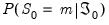

Following Krolzig, we modify Equation (50.1) to allow for regime change so that

follows a VAR process that depends on the value of an unobserved discrete state variable

. We assume there are

possible regimes, and we are said to be in regime

in period

when .
We may use Equation (50.2) to obtain an expression for the switching intercept error in terms of the observed data and current unobserved state:
Similarly, we may use Equation (50.3) to obtain an expression for the error in terms of the observed data and a set of current and past unobserved states:
The likelihood function in Equation (50.10) depends on the one-step ahead predicted probabilities of being in a regime:

. Obtaining these predicted probabilities is central to the evaluation of the likelihood.
For the Markov switching specification, estimates of the regime probabilities may be improved by using all of the information in the sample. The smoothed estimates for the regime probabilities in period

use the information set in the final period,

, in contrast to the filtered estimates which employ contemporaneous information, .
The key in moving from the first to the second line of Equation (50.23) is the fact that under appropriate assumptions, if

were known, there is no additional information about

in the future data .
Note that apart from the smoothed probability terms, , all of the terms on the right-hand side of Equation (50.23) are obtained as part of the filtering computations. Given the set of filtered probabilities, we initialize the smoother using , and iterate computation of
Equation (50.23) and
Equation (50.24) for to obtain the smoothed values.


-dimensional, VAR(p) process


. All that we require for implementation are the initial filtered probabilities, , or alternately, the initial one-step ahead regime probabilities . See “Initial Probabilities” for discussion.
 is a
is a  vector of endogenous variables,
vector of endogenous variables, are
are  matrices of lag coefficients to be estimated,
matrices of lag coefficients to be estimated, is a
is a  vector of intercepts,
vector of intercepts,  white noise innovation process, with
white noise innovation process, with  , , and
, , and  for
for  .
.  , but are uncorrelated with their leads and lags of the innovations and assumed to be uncorrelated with all of the right-hand side variables.
, but are uncorrelated with their leads and lags of the innovations and assumed to be uncorrelated with all of the right-hand side variables. , the endogenous variables parameters
, the endogenous variables parameters  , the error variance parameters
, the error variance parameters  , Typically, only a subset of the groups is allowed to vary across regimes. For example, a common restriction is that only the intercepts, or only the intercepts and the error variances are regime specific.
, Typically, only a subset of the groups is allowed to vary across regimes. For example, a common restriction is that only the intercepts, or only the intercepts and the error variances are regime specific. is a vector of exogenous variables,
is a vector of exogenous variables, are parameterized in terms of exogenous variable parameters . The remainder of our discussion will be in terms of
are parameterized in terms of exogenous variable parameters . The remainder of our discussion will be in terms of  , but the analysis can extend to underlying parameters.
, but the analysis can extend to underlying parameters. that is defined in terms of current and lagged
that is defined in terms of current and lagged  and has
and has  possible states.
possible states.  for both specifications in the discussion below.
for both specifications in the discussion below. depends only on the current state. Accordingly, we have and . It follows that
depends only on the current state. Accordingly, we have and . It follows that  is equivalent to the statement
is equivalent to the statement  .
. dimensional state vector representing the current and
dimensional state vector representing the current and  previous regimes, with .
previous regimes, with . being equal to the
being equal to the  -th possible realization of the
-th possible realization of the  dimensional vector, as in
dimensional vector, as in -th lagged state in the
-th lagged state in the  -th possible realization, for.
-th possible realization, for. are parameters that determine the regime probabilities.
are parameters that determine the regime probabilities.  , we have the full normal mixture log-likelihood
, we have the full normal mixture log-likelihood .
. and coefficients
and coefficients  parameterized using a multinomial logit specification:
parameterized using a multinomial logit specification: with the identifying normalization . The special case of constant probabilities is handled by choosing
with the identifying normalization . The special case of constant probabilities is handled by choosing  to be identically equal to 1.
to be identically equal to 1. , but this restriction is not required.
, but this restriction is not required. in period
in period  to regime
to regime  in period
in period  . (Note that some authors use the transpose of so that all of their indices are reversed from those used here.)
. (Note that some authors use the transpose of so that all of their indices are reversed from those used here.) of the matrix
of the matrix and
and  with the normalizations
with the normalizations  .
. is commonly termed
is commonly termed  :
: is obtained by summing the joint probabilities across unobserved states to obtain the marginal distribution of the observed data
is obtained by summing the joint probabilities across unobserved states to obtain the marginal distribution of the observed data .
.  dimensional state vector. We may proceed as in the uncorrelated model by setting
dimensional state vector. We may proceed as in the uncorrelated model by setting  initial probabilities in period
initial probabilities in period  as described above, and recursively applying Markov transition updates to obtain the joint initial probabilities for the
as described above, and recursively applying Markov transition updates to obtain the joint initial probabilities for the  dimensional initial probability vector in period
dimensional initial probability vector in period  .
. () improves our estimates of being in regime
() improves our estimates of being in regime  in period
in period  because the Markov transition probabilities link together the likelihood of the observed data in different periods.
because the Markov transition probabilities link together the likelihood of the observed data in different periods. is then obtained by marginalizing the joint probability with respect to :
is then obtained by marginalizing the joint probability with respect to :